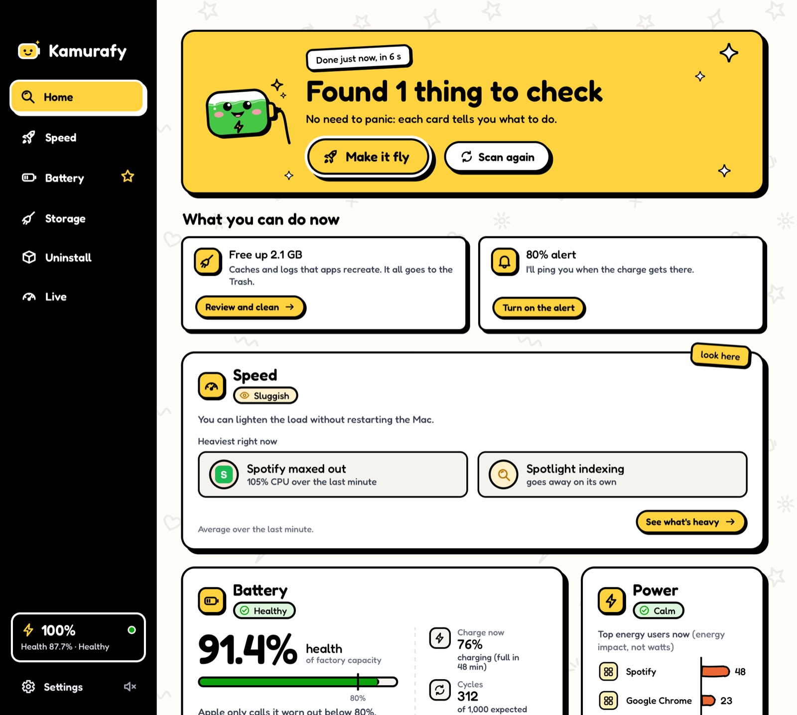
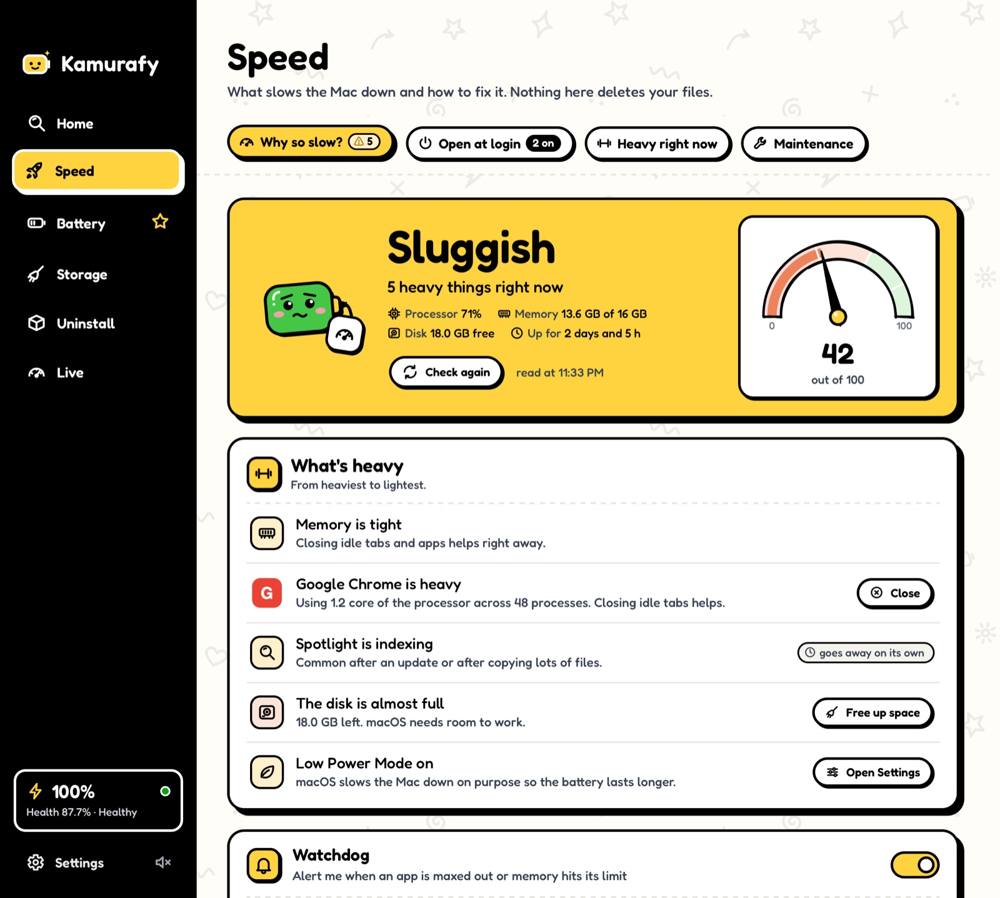
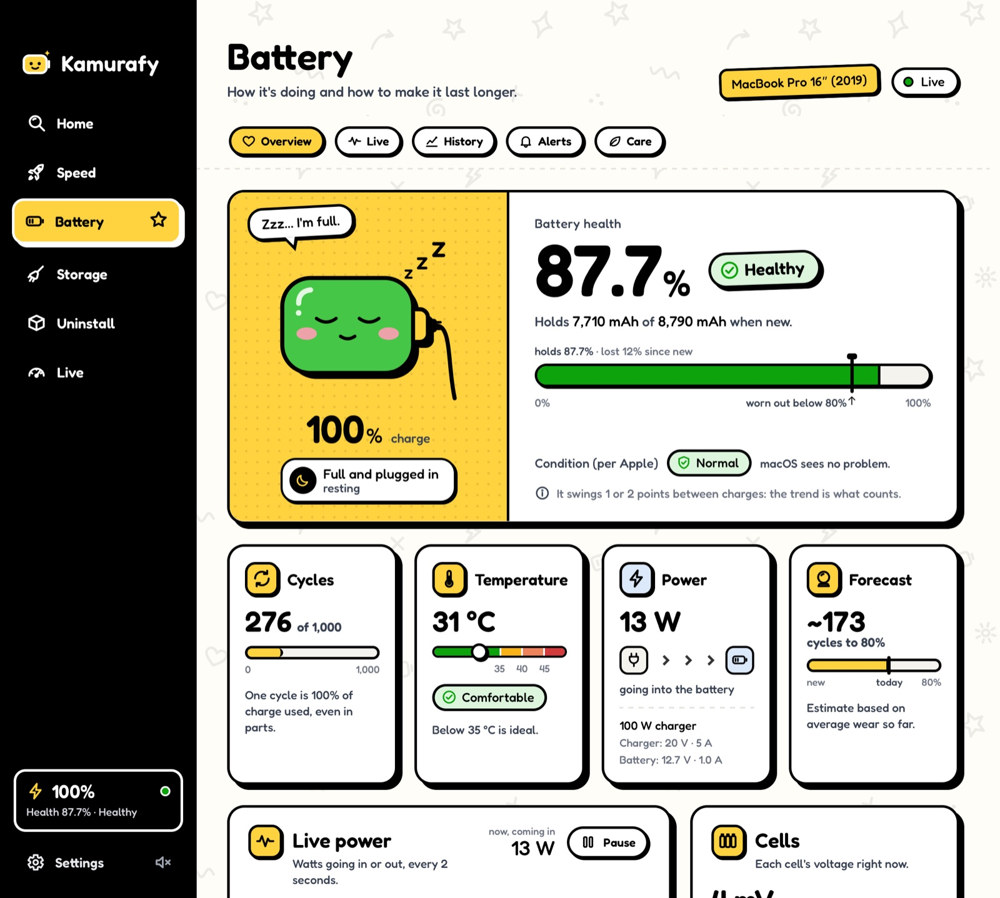
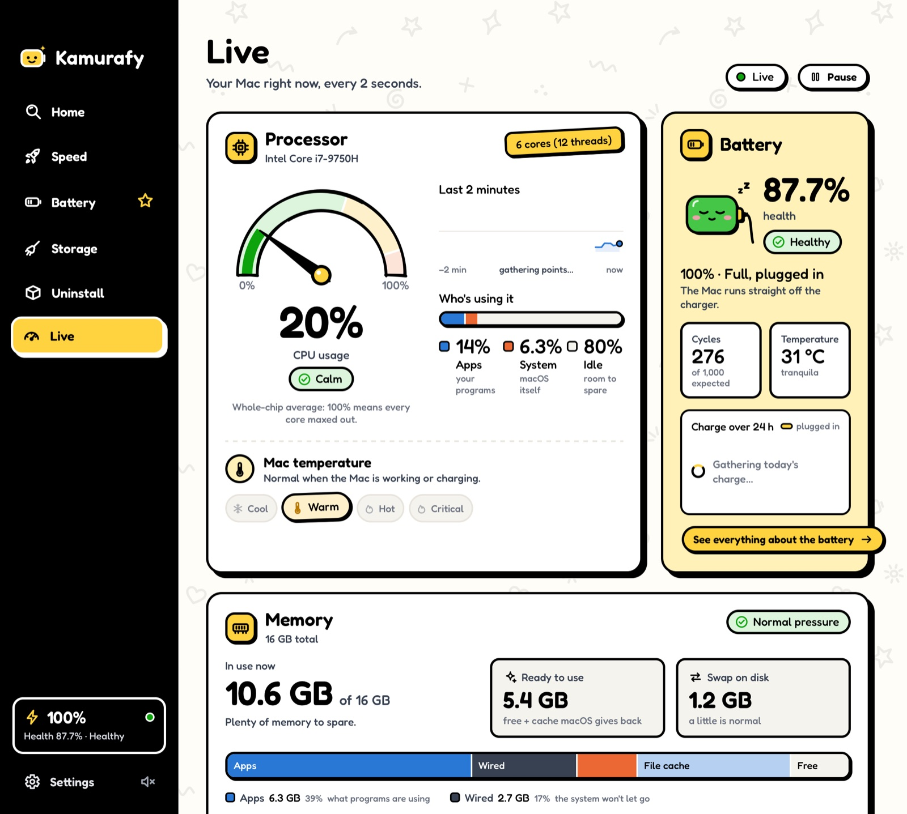
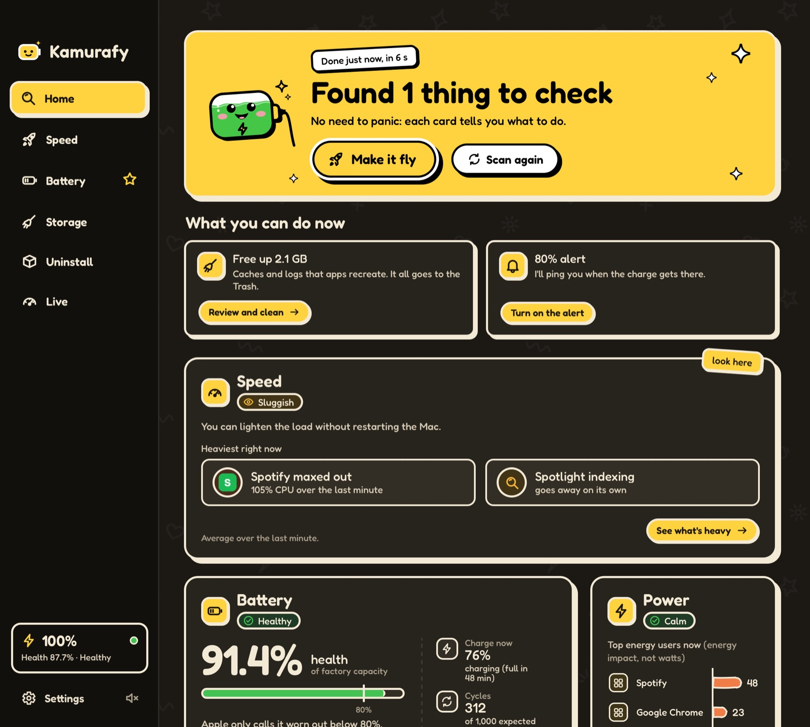

Home · Make it fly
One scan, one button.
It checks battery, memory, CPU, speed and disk. Then Make it fly does the safe fixes in one go, after you confirm.

Takes care of your Mac and,
above all, your battery.
The free, open-source alternative to CleanMyMac. No subscription, no account, no ads, no tracking.
macOS 13 or newer · Intel and Apple Silicon
Hi! Leave the battery to me.
One click shows what is weighing on it right now, worst first, each with its fix. No “free up RAM” button, no fake boost.

Each screen says what it found and what it means, then lets you decide.
Why is your Mac slow? What is heavy right now, each with its fix.
Does the safe fixes in one go, only after you review and confirm.
Warns you when an app stays maxed out or memory hits the limit.
Real health, cycles, heat, 7 days of charge and an 80% alert.
Caches, logs, old downloads, large files and duplicates, to the Trash.
Removes an app together with the leftovers it scatters around.
CPU, memory, disk and battery, live. Plus the battery in the menu bar.
About 180 MB idle and next to no CPU. Dark mode and 3 languages.
It checks battery, memory, CPU, speed and disk. Then Make it fly does the safe fixes in one go, after you confirm.

Measured the way macOS does, with cycles, heat, the last 7 days and an honest forecast to 80%.

CPU, memory, disk and battery every 2 seconds, and why “freeing RAM” does not help.

Follows your macOS appearance and speaks English, Portuguese and Spanish.

The rules are in the code, and the code is open for anyone to check.
All on GitHub under GPL-3.0: read it, check it, build it yourself.
You review the list and confirm first. One click to undo.
Automated tests run it against a fake home folder full of traps.
No ads, no telemetry. What it reads stays on your Mac.
The new-version alert, off by default. If you turn it on, once a day it asks GitHub for the latest version number, and nothing else.
Only known folders inside your home folder. Nothing from the system, no admin password, and personal files are never pre-selected.
Read the safety rulesmacOS 13 (Ventura) or newer, on Intel and Apple Silicon.
Download Kamurafy.dmg, open it and drag Kamurafy to Applications:
KamurafyApplications
Open Kamurafy, close the warning, then go to:
System SettingsPrivacy & SecurityOpen Anyway
In Applications, right-click Kamurafy and confirm:
right-clickOpenOpen
Prefer Homebrew?
brew install --cask gabrielkamura/tap/kamurafy
Why the warning? Kamurafy is not signed with a paid Apple developer account yet, so macOS asks you to confirm once. You can always read the code or build it yourself.
Free, no account and no ads.
macOS 13 or newer · Intel and Apple Silicon